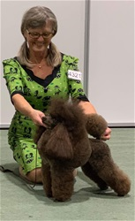
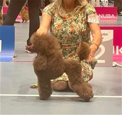

Pudler med lang historie i ring, klipp og oppdrett.
Kennel Fidel ble presentert som et aktivt og personlig kennelnettsted drevet av
Eva Nygaard og Gro Staurheim, med hunder, valpenytt, utstillingsresultater og
mange aars erfaring med puddel.
Ett sort tispevalp og to aprikose hannvalper ble oppgitt etter NUCH Fidel
Arizona og Tixobambixo's Helmer of Ther-Lia. Dette vises her som historisk
kennelstoff, ikke som naavaerende tilgjengelighet.
Den gamle siden hadde loepende oppdateringer til hunder, valper, showresultater,
hundeklipp og memorialsider. Her er det samlet som en moderne forside med
lesbare hovedsaker og korte innganger videre.
Valper og kullUtstillingsresultaterVåre hunderHundeklippChampionsMemoriam og opphav
Nyheter
Utvalgte innlegg fra den gjenfunnede siden
Nyhetsoversikten i arkivet peker paa en side som ble oppdatert over tid med lenker
til hunder, kull og show. Her er hovedstoffet omsatt til frontsidekort.

27. november 2022
Fidella Starface markerte seg i Sandefjord
I den arkiverte showrapporten fra NKK Sandefjord ble Fidella Starface omtalt
som vinnende i intermediate class og 2. beste tispe, mens kullsoester
Surprice Starface vant aapen klasse og tok cert.
27. august 2022
Karri og Kamfer fikk stor plass paa NPK Hokksund
Arkivet beskriver Tixobambixo Khamfer of El-Zanz som BIR SAR og BIS SAR 2,
mens Fidella Starface ble foert fram med BIR junior, BIR og BIS junior 2.
2023
Valpesiden holdt tonen jordnaer og tydelig
Kennelen skrev at valper selges til de rette hjemmene, med fokus paa mosjon,
pelsstell, helseundersoeking, miljoetrening og videre hjelp fra oppdretter.
2022
Planlagt kull med Winona og Peter Pan
"New litters"-siden oppga et ventet mellompuddelkull etter NUCH Fidel Winona
og NUCH NJV-21 NORDJV-21 Kimalmo's Peter Pan, omtalt som et kull de gledet seg til.
Fra oversikten
3. oktober
Nyhetsoversikten viser en oppdatering som sendte leseren videre til dogshows, Karri og Arizona.
Fra oversikten
23. mai
En samlet oppdatering pekte til dogshows, puppyshows, Nona, Karri og siden for valper til salgs.
Hundeklipp
Hundeklipp som fast del av kennelen
Eva beskrev hjemmeklipp for faste kunder og egne puddelfrisyrer, fra lammeklipp til sportskontinental.
Våre hunder
Profiler fra hundesidene
Originalmenyen hadde egne sider for aktive hunder, veteraner, avlshanner,
stamtavler, movement og memoriam. Frontsiden under trekker fram noen navn som gikk igjen.

Fidel Face Of A Devil "Bowie"
Brun toy hann. Arkivet oppgir Int Nord Ch, PRCD A, patella normal og Toy of the Year i 2018, 2019 og 2020.
Toy
Fidella Starface "Karri"
Brun toy tispe foedt 19.05.2021. Arkivet kobler henne til Crufts-kvalifisering og flere BIR-resultater.
Mellom
Tixobambixo Khamfer Of El-Zanz
Aprikos hann paa 40 cm. Arkivet oppgir HD A-A, kne 0-0, PRCD A og flere BIS SAR-resultater.
Stud
Fidel Zanzibar
Multichampion mellompuddel. Avlshannsiden oppgir 41 cm, HD A-A, AD 0-0, kne 0-0 og PRCD B.
Mor til kull
Fidel Arizona
NUCH og oppgitt som mor til kullet arkivert 21.03.2023, etter Tixobambixo Khamfer Of El-Zanz og Icefly Fidel Almeria.
Boe
Fidel Winona
Gro Staurheims mellomtispe. Championsiden sier at hun ble champion paa foerste forsoek etter fylte to aar.
Valper
Historisk valpeinfo, presentert som en trygg kontaktflate
Den gamle siden hadde egne flater for "Til salgs" og "New litters". Her er stoffet
presentert som arkivert kennelinfo med tydelig oppfordring om a bekrefte status direkte.
Arkivert kull
21.03.2023
Mellompuddelkull med en sort tispe og to aprikose hannvalper, oppgitt etter
NUCH Fidel Arizona og Tixobambixo's Helmer of Ther-Lia.
Kennelens egen tekst
Hva kennelen la vekt paa
Passende hjem, gode turmuligheter, forstaaelse for pelsstell, helsesjekk,
miljoetrening og hjelp med klipp og utstilling for nye eiere.
For henvendelser
Hva det er verdt aa avklare
Om det finnes aktive eller planlagte kull naa.
Helseundersoekelser, registrering og kontrakt.
Forventninger til aktivitet, pelsstell og oppfoelging.
Meritter
Resultater som bar den gamle siden
Utstillingssidene var en viktig del av identiteten til Kennel Fidel. Her er noen
gjentakende hovedspor samlet i en mer lesbar oversikt.
2018-2020
Toy of the Year
Fidel Face Of A Devil ble oppgitt som Toy of the Year tre aar paa rad.
2022
Karri paa vei opp
Fidella Starface ble omtalt med Crufts-kvalifisering, BIR-resultater og sterk plassering i Sandefjord.
2008-2022
Championhistorikk
Championsidene og listen over champions viser en lang rekke norske, nordiske og internasjonale titler.
Forsiden
118 champions
Den arkiverte forsiden frontet Kennel Fidel med tittelen "Kennel Fidel - 118 Champions".
Om kennelen
Eva, Gro og et nettsted med personlig stemme
Om oss-siden beskrev kennelen som drevet av Eva Nygaard og Gro Staurheim, med
en kombinasjon av oppdrett, utstilling, hundefrisering og hverdagsliv med puddel.
Eva Nygaard
Arkivet sier at Eva hadde vaert aktiv med pudler i over 50 aar gjennom oppdrett, utstilling og hundefrisering.
Gro Staurheim
Gro beskrives som en del av kennelen i 34 aar og som medeier paa flere pudler, med base i Boe i Telemark.
Hundeklipp hjemme
Hundeklipp-siden oppga klipp for faste, utvalgte kunder og et tydelig engasjement for klassiske puddelfrisyrer.
Arkivbilder
Noen foto lot seg hente tilbake
Bildene brukes her som stemningsbaerere for kennelstoffet, uten a tilskrive sikre hundenavn der matchen er uklar.
Forsidefoto fra WaybackUtstillingspreg fra arkivetGenerisk kennelbilde fra forsiden
Kontakt
Kontaktpunkter fra offentlig arkiv
Kontaktdataene under er hentet fra de offentlige arkivsider som ble brukt til denne
moderniserte forsiden. Status og detaljer maa bekreftes direkte ved bruk.